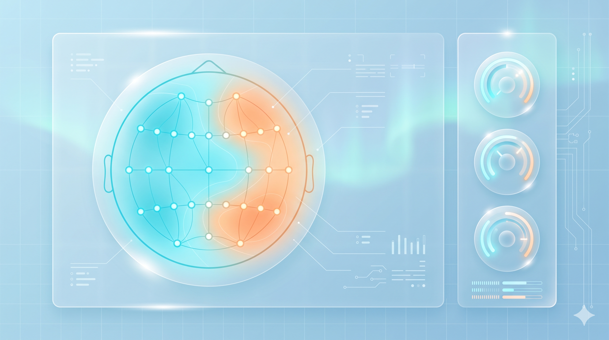
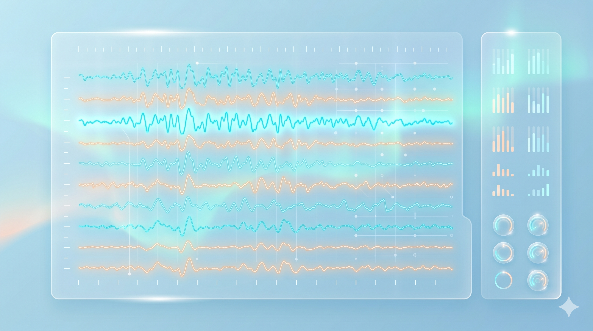

BHB-EEG Station
v1.0.1
未连接
设备
模式
选择蓝牙设备
扫描后从下拉列表选择目标设备，再建立连接
扫描
设备列表
请先点击“扫描”
连接
断开
状态：未连接
通道选择 10-20标准电极位置
点击电极选择通道与顺序；顺序用于波形/导出显示
应用到系统
已选
0
/
8
参考通道（右键点选）
工作通道（左键点选）
清空
常用组合
套用
删除组合
保存为本机常用
保存
模式选择

阻抗检测
用于上机前的电极接触检查：开启后实时接收各通道阻抗，并以地形图与列表展示，帮助快速定位接触不良通道，便于调整电极与导电介质。

脑电采集
用于实时脑电采集与可视化：开始采集后通过 WebSocket 显示多通道波形与调试事件，同时按会话录制数据；停止后可在“数据存储”页导出 CSV/EDF，并可选带通滤波另存。
电刺激
用于经颅直流电刺激（tDCS）控制与监测：支持开启/停止刺激、下发电流/缓升/稳定/缓降/报警阈值等控制指令，并实时展示输出电流、高压电压、故障状态与电量；是否启用由配置开关控制。
开发中
SSVEP
SSVEP
稳态视觉诱发电位：用于刺激参数配置、频率/相位设计与在线识别（预留）。
开发中
MI
MI
运动想象：用于任务范式、训练流程与在线分类/反馈闭环（预留）。
开发中
P300
P300
事件相关电位：用于刺激矩阵范式、在线识别与反馈闭环（预留）。
调试输出
仅展示结构化调试事件，不展示网络/蓝牙连接信息
清空
暂停输出
开始EEG采集
停止EEG采集
EEG 波形
WebSocket 实时推送
电量：
--
数据存储
停止采集后在此导出 CSV/EDF ｜ 默认 50Hz 工频陷波，带通滤波可选
返回模式
导出文件
会话ID
--
会话目录
--
原始文件名（不含扩展名）
导出原始数据（已包含工频陷波）
CSV
EDF
启用带通滤波
低频截止（Hz）
高频截止（Hz）
滤波后文件名（不含扩展名）
导出带通滤波后数据
CSV
EDF
调试输出
仅展示结构化调试事件，不展示网络/蓝牙连接信息
清空
暂停输出
开启阻抗检测
停止阻抗检测
阻抗可视化
用于上机前的电极接触检查
阻抗列表（Ω）
通道选择与顺序请在“设备”页地形图中配置并应用到系统
调试输出
仅展示结构化调试事件，不展示网络/蓝牙连接信息
清空
暂停输出
开启电刺激
停止电刺激
电刺激（tDCS）
监测数据与两级指令控制面板
电量：
--
监测数据
实际输出电流（计算值）
--
uA
高压电源电压（计算值）
--
uV
输出电流测量值（原始值）
--
高压电压测量值（原始值）
--
状态信息
CCS工作状态：未知
负载开路故障：未知
负载过流故障：未知
控制面板